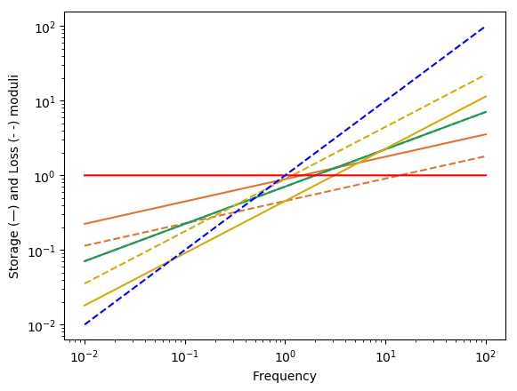
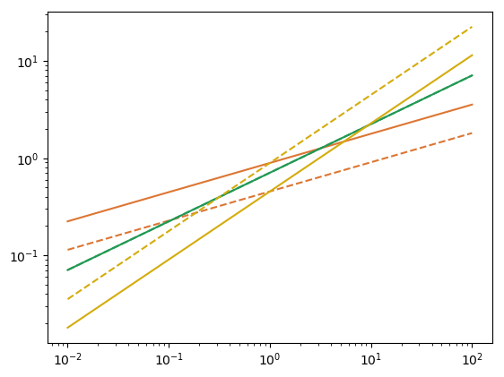

Spring-pot
using RHEOS
using PyPlotConsitutive equation
\[\sigma(t) = c_{\beta} \frac{d^\beta \epsilon(t)}{dt^\beta}\]
for $0 \leq \beta \leq 1$
By typing the name of the model, it is possible to visualise its graphical representation and its parameters.
SpringpotModel name: springpot
Free parameters: cᵦ and β
____ ╱╲ ____
╲╱ cᵦ, βRelaxation modulus
\[G(t) = \frac{c_{\beta} }{\Gamma(1-\beta)} t^{-\beta}\]
Creep modulus
\[J(t) = \frac{1}{c_\beta \Gamma(1+\beta)}t^\beta\]
Storage and loss moduli
$ G^{\prime}(\omega) = c_\beta \omega^\beta \cos(\frac{\pi}{2}\beta)$
\[G^{\prime\prime}(\omega) = c_\beta \omega^\beta \sin(\frac{\pi}{2}\beta)\]
Spring
When $\beta = 0$ the springpot specialises to a spring
SpringModel name: spring
Free parameters: k
___╱╲ ╱╲ ╱╲ ________
╲╱ ╲╱ ╲╱ kDashpot
When $\beta = 1$ the springpot specialises to a dashpot
DashpotModel name: dashpot
Free parameters: η
___
_____| |_____
_|_|
ηQualitative behaviour
# Create a time only dataset
dϵ = timeline()
dσ = timeline()
# calculate a strain/stress data by appling a function of time (by defalut a unit step otherwise substitute hstep(amp = 2.))
dϵ = strainfunction(dϵ, hstep())
dσ = stressfunction(dσ, hstep()) - stressfunction(dσ, hstep(offset = 5.0))
colplot = ["#dc7633", "#229954", "#d4ac0d"]
fig, ax = subplots(1,2, figsize=(15,7))
# plot moduli for varying β
for (i,beta) in enumerate([0.3, 0.5, 0.7])
springpot_model = RheoModel(Springpot,(cᵦ = 1.0, β = beta))
#Relaxation modulus
dG_springpot = modelpredict(dϵ, springpot_model)
ax[1].plot(dG_springpot.t, dG_springpot.σ./maximum(dG_springpot.σ), color=colplot[i])
# Creep modulus
dJ_springpot = modelpredict(dσ, springpot_model)
ax[2].plot(dJ_springpot.t, dJ_springpot.ϵ./maximum(dJ_springpot.ϵ), color=colplot[i])
end
# SPRING
spring_model = RheoModel(Spring, (k = 1.0,))
#Relaxation modulus
dG_spring = modelpredict(dϵ, spring_model)
ax[1].plot(dG_spring.t, dG_spring.σ./maximum(dG_spring.σ), color = "red");
# Creep modulus
dJ_spring = modelpredict(dσ, spring_model)
ax[2].plot(dJ_spring.t, dJ_spring.ϵ./maximum(dJ_spring.ϵ), color = "red");
# DASHPOT
dashpot_model = RheoModel(Dashpot, (η = 1.0,))
# Creep modulus
dJ_dashpot = modelpredict(dσ, dashpot_model)
ax[2].plot(dJ_dashpot.t, dJ_dashpot.ϵ./maximum(dJ_dashpot.ϵ), color = "blue");
ax[1].set_xlabel("Time", fontsize = 14);
ax[1].set_ylabel("Stress", fontsize = 14);
ax[1].tick_params("both", labelsize=12);
ax[2].set_xlabel("Time", fontsize = 14);
ax[2].set_ylabel("Strain", fontsize = 14);
ax[2].tick_params("both", labelsize=12);
dω = frequencyspec()
colplot = ["#dc7633", "#229954", "#d4ac0d"]
# plot moduli for varying β
for (i,beta) in enumerate([0.3, 0.5, 0.7])
springpot_model = RheoModel(Springpot,(cᵦ = 1.0, β = beta))
# Storage and Loss moduli
d_springpot = dynamicmodelpredict(dω, springpot_model)
loglog(d_springpot.ω, d_springpot.Gp, color=colplot[i], "-")
loglog(d_springpot.ω, d_springpot.Gpp, color=colplot[i], "--")
end
# SPRING
spring_model = RheoModel(Spring, (k = 1.0,))
d_spring = dynamicmodelpredict(dω, spring_model)
loglog(d_spring.ω, d_spring.Gp, "-", color = "red")
# DASHPOT
dashpot_model = RheoModel(Dashpot, (η = 1.0,))
d_dashpot = dynamicmodelpredict(dω, dashpot_model)
loglog(d_dashpot.ω, d_dashpot.Gpp, "--", color = "blue")
xlabel("Frequency");
ylabel("Storange (—) and Loss (- -) moduli");